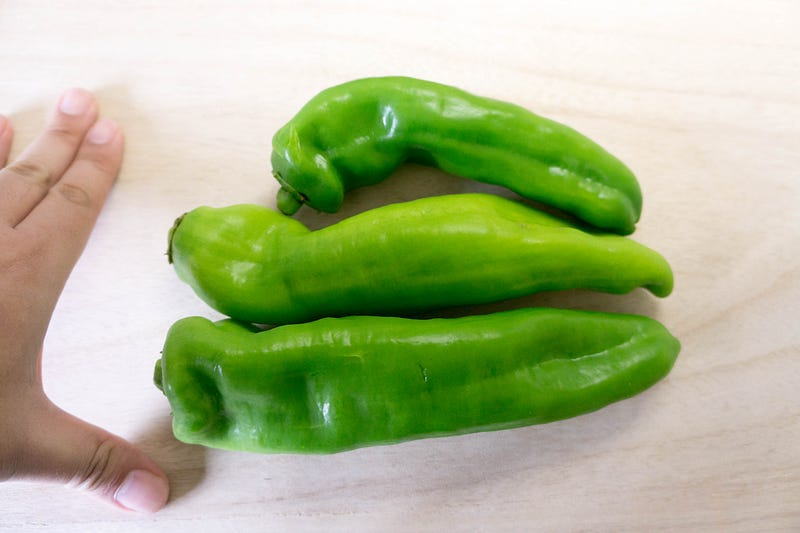
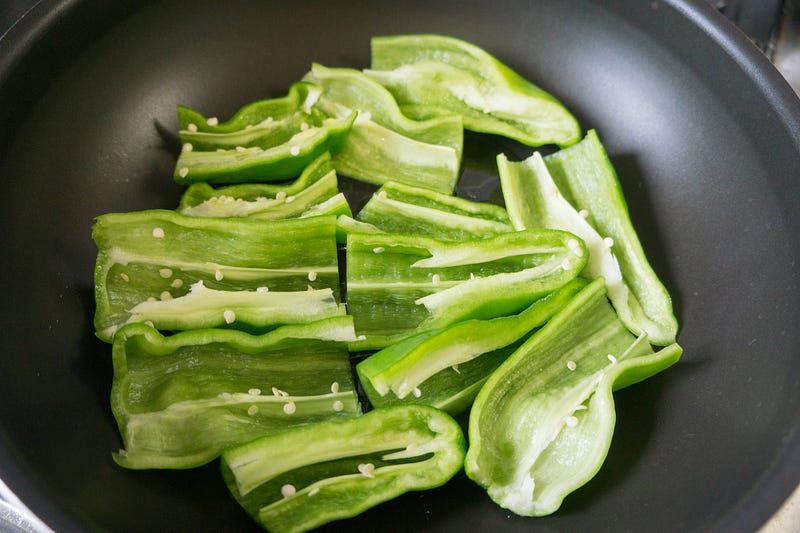
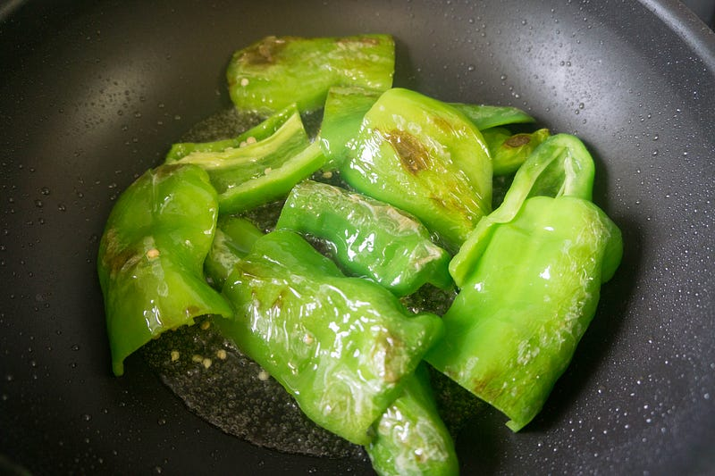
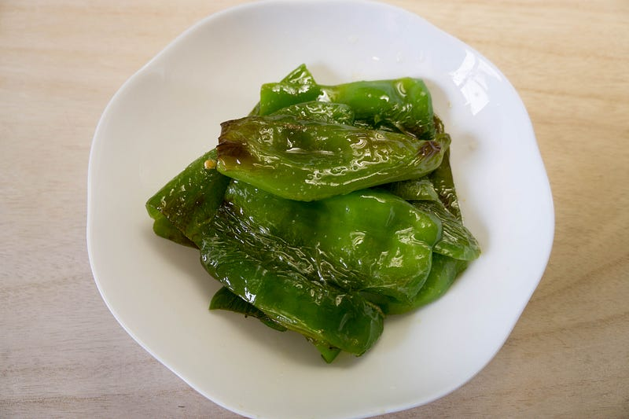
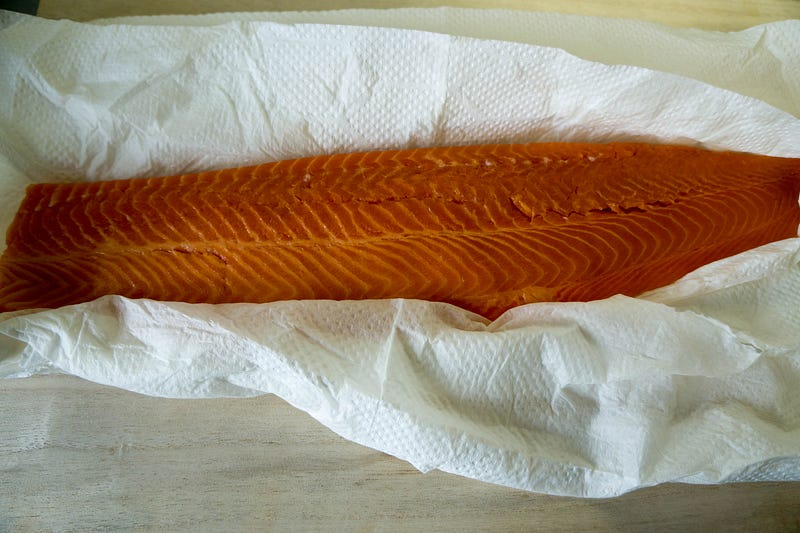
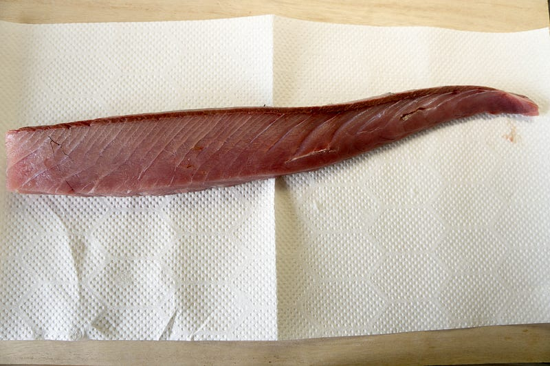
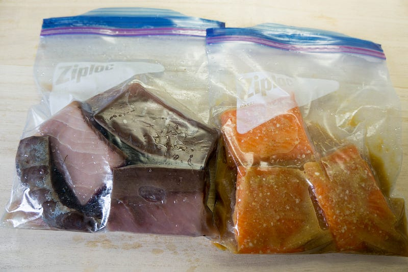
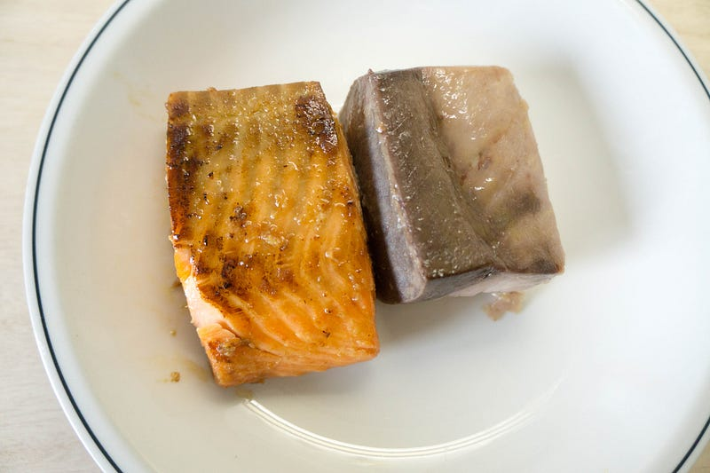

サーモンの西京漬け風とブリとロングピーマン
サーモンの西京漬け風とブリとロングピーマン
来客があったので、以前改良してうまくいったサーモンの西京漬け風等を作る事にした。ついでにブリとロングピーマンもやった。
前回の料理はこちら
ちょっと前に僕の誕生日のために作ってくれたブラジルプリンことPudim de Leiteを妻がまた作ってくれた。今度は子供達もちょっと手伝ってくれた。medium.com
前回の低温調理はこちら
低温調理に興味が出てきたら是非購入だ！
サーモンの前に副菜のロングピーマンの炒め。ロングピーマンは以前グラナダに行った時に朝食に毎朝出てて、大変おいしかった。
First of all, a big thanks to my employer, HDE Inc., for sending me to YAPC::EU 2015 in Granada. I think I was able to…medium.com
今回はそれの簡易版。朝食に出ていたバージョンは少し炒め煮みたいな形になってたけど、これは油多めで焼いて、塩しただけのシンプルピーマンです.




この見た目でもロングピーマンは肉厚で、結構火を通してもピーマンのしゃきしゃきが残るので、わりと強気で火を入れても大丈夫なのがよい。

サーモンはアトランティックサーモンのフィレ。このサイズで1200円くらい、西京漬け風の切り身が6切れくらい作れる。
西京漬け風のものの作り方は以前書いた。なお、我が家での「正解」となったレシピは最後のプリンのリンクの最後に書いた、味噌だれをつけたものです。
今回は興味があったので、ブリも低温調理することにしてみた

ブリはあくまでおまけだったので、刺身用の安い部位を買ってきたのだけど、そしたら骨の横の結構血合いがすごい部分で、このサクをひっくり返すとわりと血だらけだった。安いのには理由があった… もし次回があるのならちゃんと高めの部位を買ってきたい。
サーモンは味噌、味醂、醤油、ブリは塩、味醂、酒で。どちらも40℃で40分。

できあがったところを焼くとこんな感じ。

サーモンは安定して美味しい。味噌だれが素晴らしいので、是非anovaの漬け汁を使って作って欲しい。
ブリは部位をもっと白身部分にしないと血合いが結構えぐい。味醂と酒を入れたのは多分正解で、臭みは気にならなかった。白身メインにした上で、40℃で20分くらいの超短時間でやり、ほぼレア状態のほうがうまい気がする。これはまた次回があったら、その時までの宿題。